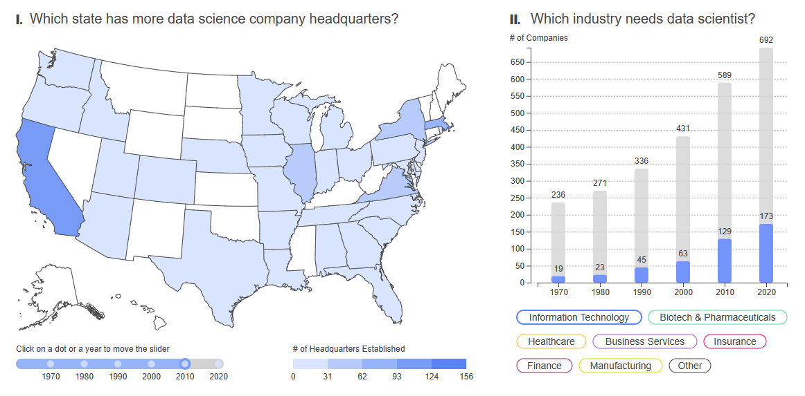

Welcome to the repository for the Cornell Data Driven Web Application Course!
This repository contains course project done when taking the course
Data Driven Web App in Cornell University.
Are you looking for a Data Scientist job in the U.S? Here's the dashboard right for you to explore the job market trend!! The data is collected from Glassdoor with expected salary, industry, and company scale. Feel free to explore!
Is youtuber an ideal career?
Interested in if top Youtubers can survive purely with incomre from Youtube Channel?
The dataset contains top 1000 youtuber's income, the GDP where youtuber come from
to compare their income with countries life level.
Do you recall life during the Covid-19 pandemic?
The plot illustrates car accidents that occurred in the USA from 2019 to 2020,
allowing for a comparison between the years preceding and during the pandemic,
offering insights into the changes in daily life and its impact.
This dataset contains character “co-occurrence” in the Game of Thrones book series.The co-occurence is counted when characters happened to be in the same scene. For example, if Danaerys appears with Irri in three separate chapters, then the network connects these two characters with a weight of 3. In other words, the thicker the line is, the more complicated the relation between each of characters.